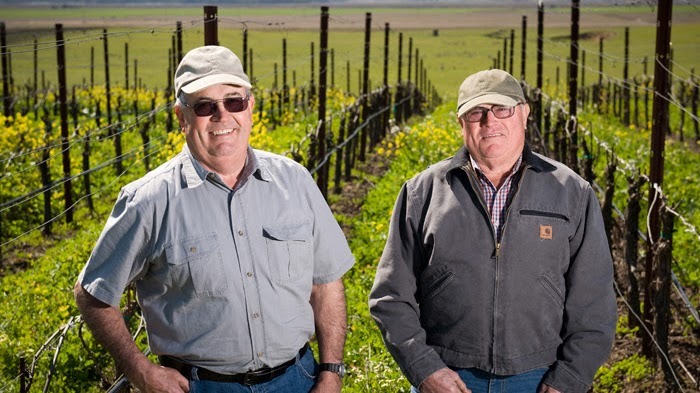
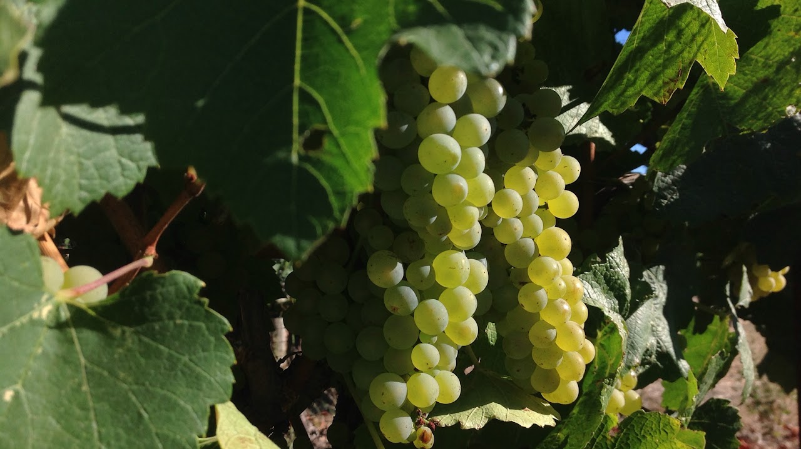
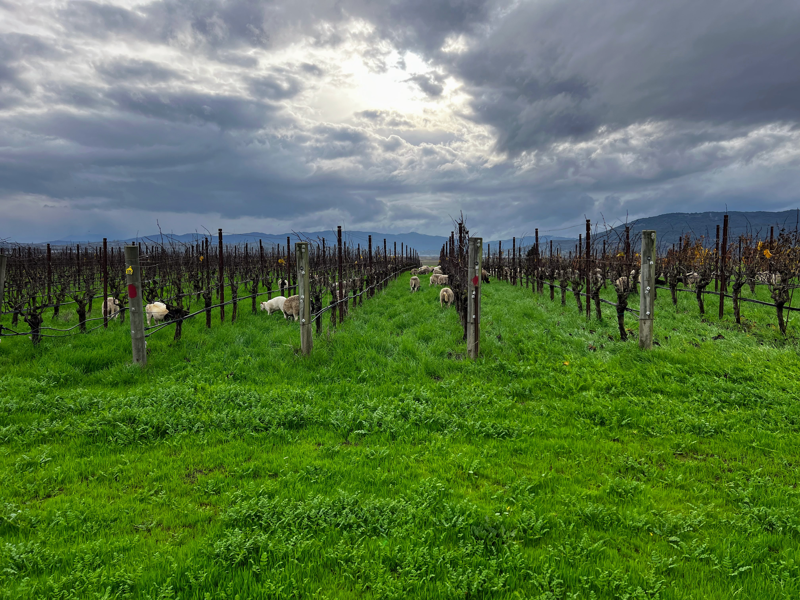
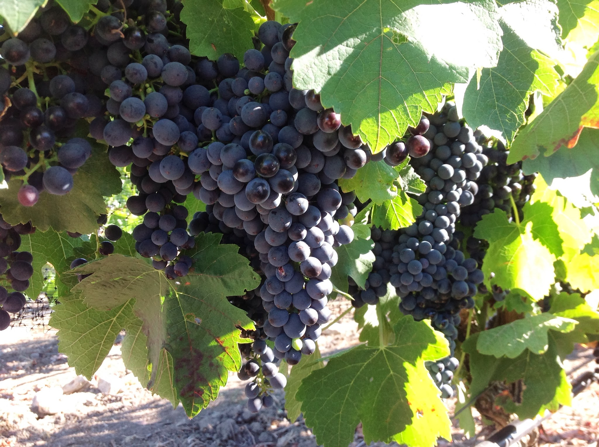

Flocchini Estate's agricultural heritage stretches back to the historic Rancho Petaluma, the 66,000-acre land grant established in 1834 under General Mariano Guadalupe Vallejo. Along Petaluma's windswept Lakeville corridor, this land has supported generations of California agriculture, long before its transformation into the vineyard we know today.
In 1911, at just 20 years old, Frank Flocchini arrived in California from Lombardia, Italy. Starting as a share milker, he worked and saved until he could purchase the family's Lakeville ranch on April 16, 1919.
Family lore recalls that some locals questioned his decision, dismissing the property as ground fit only for growing star thistle. But where others saw poor farmland, Frank saw opportunity.
Returning to Italy to marry Maria, the couple built their life on the ranch, raising five children and establishing a thriving family dairy. Decades of careful farming, including the annual application of cow manure, gradually enriched the soil with organic matter.
That same determination and commitment to the land carried into the next generation, when two of Frank and Maria's sons took on the ambitious task of transforming the family's dairy pastures into the premium wine grape vineyard it is today.
At Flocchini Estate, we believe exceptional wine begins in the vineyard. Across more than 25 acres of estate vines, our regenerative and sustainable farming practices are designed to nurture living soils, encourage balanced vine development, and conserve the natural resources that sustain our land. For winemakers, that commitment begins with carefully grown, cool-climate fruit that reflects the distinctive character of the Petaluma Gap.

When the family began converting the ranch's pastures into vineyard blocks, generations of dairy farming had already helped build a rich agricultural foundation. But beneath the surface lay a dense clay hardpan that could restrict drainage and limit the development of deep, healthy vine roots.
Before planting, the family undertook an extensive soil preparation program. Using a six-foot ripping shank, the soil was ripped in multiple directions to fracture the hardpan and create pathways for root growth and water movement. Gypsum was incorporated into the subsurface cuts to help improve clay soil structure.
This investment laid the foundation for a vineyard designed to make the most of its soil profile within the Petaluma Gap. Today, the estate's vines benefit from the preparation of the land beneath them. Improved soil structure promotes deeper root exploration, drainage, and access to moisture in cooler soil layers, helping vines thrive through the Petaluma Gap's demanding growing conditions.
Combined with careful farming and attentive vineyard management, this foundation supports balanced vine development and the concentrated, cool-climate grapes that distinguish Flocchini Estate.

A Decade of No-Till Viticulture: For more than a decade, we have maintained a strict no-till approach, preserving natural soil structure and protecting the beneficial fungi and microorganisms beneath the surface. Undisturbed soil supports moisture retention, nutrient cycling, and healthy root development.
The Winemaking Advantage: A stable, biologically active soil environment supports balanced vine canopies and the development of complex flavor profiles, providing winemakers with grapes shaped by more than a decade of consistent soil stewardship.
Biological Mowing: 200 Dorper Sheep: Our flock of approximately 200 Dorper sheep plays an active role in seasonal vineyard management. Through carefully timed grazing, the sheep control vegetation, reduce mechanical mowing, and naturally return organic nutrients to the soil.
The Winemaking Advantage: Integrating livestock into vineyard management supports soil fertility and balanced vine growth, contributing to the healthy, productive vines needed to develop quality fruit.
100% Herbicide-Free Vineyard (Roundup Free): We manage our vineyard entirely without chemical herbicides, including glyphosate-based products such as Roundup. Through managed grazing and non-herbicide vegetation control, we protect the estate's living soil environment without relying on chemical weed treatments.
The Winemaking Advantage: Grapes grown entirely without herbicide applications offer winemakers clearly defined farming provenance and the confidence to source fruit aligned with their own quality standards and production philosophy.
100% Surface-Captured Rainwater Irrigation: Our irrigation water comes exclusively from rainwater captured and stored on the ranch, without drawing on local groundwater supplies. We irrigate selectively, providing water when needed to maintain vine health while avoiding unnecessary inputs.
The Winemaking Advantage: Selective irrigation supports vine balance and concentrated fruit development through carefully managed hydration, while allowing winemakers to source grapes from an estate that relies entirely on captured rainwater rather than regional groundwater.

Located along the Lakeville corridor of the Petaluma Gap AVA, Flocchini Estate produces Chardonnay, Pinot Noir, and Syrah from its distinctive cool-climate vineyard. Adobe and Goldridge clay soils, maritime influences, and extended ripening conditions contribute to fruit with concentrated flavors, natural acidity, and distinctive varietal character. We welcome partnerships with established wineries and independent winemakers.
From micro-lot allocations beginning at just two tons to larger block agreements, we offer flexibility for winemakers seeking premium estate-grown fruit and the opportunity to explore our individual clonal selections.
Flocchini Estate Chardonnay combines bright natural acidity with a concentrated structural core and distinctive chalky minerality. The Petaluma Gap's cool growing conditions support extended ripening, encouraging flavor development while preserving freshness and balance.
Our Pinot Noir brings together heritage Burgundian selections that express the complexity of the Petaluma Gap's cool, wind-influenced growing environment. The fruit offers layers of red-fruit character, earthy nuances, and the structural freshness associated with refined, cool-climate Pinot Noir.
Grown in the heart of the Petaluma Gap's wind corridor, our Syrah reflects the intensity of this distinctive cool-climate environment. The fruit develops concentrated dark-fruit character, savory spice, and structural freshness reminiscent of classic Northern Rhône expressions.
We welcome inquiries from independent winemakers and established wineries seeking premium Petaluma Gap fruit. Contact us to discuss available varieties, clonal selections, small-lot allocations, and vineyard partnerships.
Contact Jordan James (Flocchini)"Flocchini Estate fruit anchors the ultra-premium Damaris Reserve Chardonnay program described as 'most exquisite' and 'the richest Chardonnay in our portfolio', 'a true expression of playful elegance' and an 'excellent wine'."
- Landmark Vineyards"Planted to two of our winemaker's favorite chardonnay clones, Wente and Robert Young... Brothers Andrew and Nick Flocchini farm this small vineyard site with exceptional care and attention. Thanks to the mild, cool climate, the grapes achieve early ripening and mature while maintaining balance and optimal acidity."
- Landmark Vineyards"Flocchini in the Petaluma Gap (90% of the fruit for this wine) is producing a vibrant Wente selection of Chardonnay, which could be straight from Meursault... It is classy and stunning, always keeping a fresh turn to its original minerality."
- Vivier Wines"A hidden gem... The cooling marine breezes of the Petaluma Gap and the 30-year-old heritage vines at the Flocchini ranch yield a vibrant, complex, and layered profile featuring delicate rose petal aromas and chalky, fine-grained tannins."
- Stéphane Vivier, Winemaker"The Lakeville corridor is quickly becoming the epicentre for California's most compelling cool-climate Syrah. Grapes grown here benefit from an unforgiving wind that thickens skins and concentrates phenolics, producing dark-fruited, pepper-laced wines that mirror the great, savory Northern Rhône classics."
- Petaluma Gap Winegrowers SpotlightMore than a century after Frank and Maria Flocchini established the family ranch, successive generations continue to care for the land and carry forward their agricultural legacy. Today, family members remain directly involved in vineyard management, winery relationships, and the stewardship of Flocchini Estate.
A son of Frank and Maria, Andrew brings more than 25 years of wine-grape growing experience to the estate. He oversees daily vineyard operations, including pruning, canopy management, and row-by-row quality control, drawing on his extensive knowledge of the land and its vines.
A great-grandson of Frank and Maria, Jordan manages winery relationships, grape allocations, and commercial partnerships. He works directly with winemakers to coordinate fruit contracts and vineyard logistics.
A granddaughter of Frank and Maria and a practicing Enrolled Agent (EA), Elizabeth oversees estate accounting, financial compliance, and tax matters, supporting the long-term financial management of the family business.
A grandson of Frank and Maria, Joe supports daily ranch operations, equipment management, and the practical work required to maintain the estate's agricultural infrastructure.
A grandson of Frank and Maria, James participates in property maintenance, infrastructure improvements, and special estate projects, helping preserve and improve the family's vineyard property.
Daughter of Frank and Maria, Lena supports the business from out of state. Though physically distant, her dedication to our shared heritage ensures the family vision remains unified across generations.
Daughter of Frank and Maria, Anna has lived her entire life on the family farm. She provides a living bridge to our history, maintaining our deep emotional anchor to this land.
Son of Frank and Maria, Nick's lifelong passion, commitment, and agricultural wisdom laid the bedrock of our modern vineyard footprint. We carry forward the exact high standards and vision he championed.
Son of Frank and Maria, James was a dedicated co-owner in the family business who passed away in 2015. His historical contribution remains an integral part of our generational footprint.